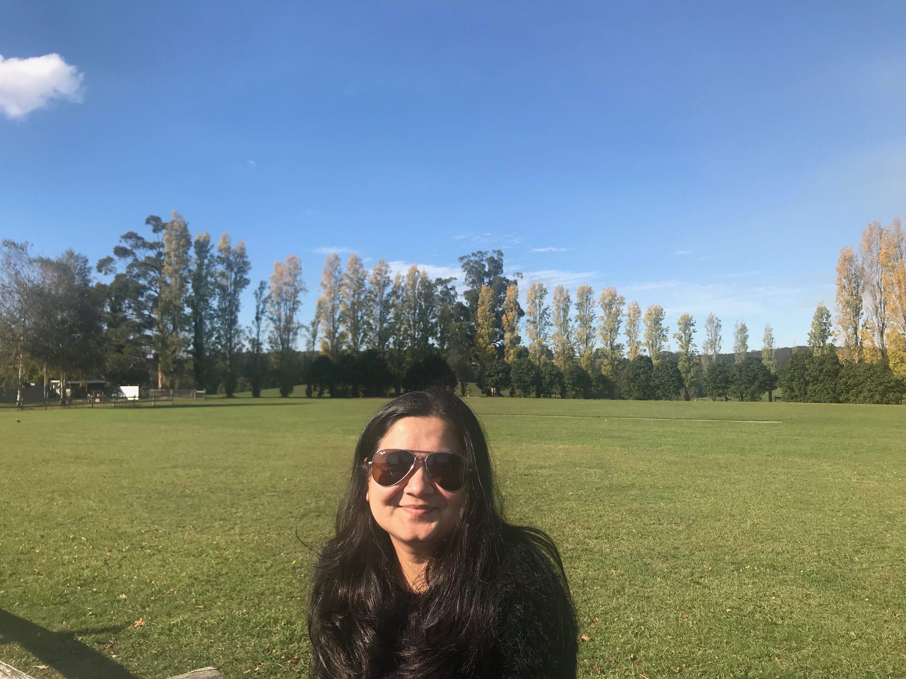

About Me
I am an experienced digital developer with more than 7 years of experience predominantly in Wordpress. I currently work for SportsTG, which specialises in providing integrated sports web based solutions. I aim at constantly updating my knowledge and skills in digital market for career growth. On the lighter side, I am a passionate in cooking, avid traveller and social media fan :-) I migrated with my husband to Australia 5 years ago and have a close group of family and friends which keeps my weekends happening.